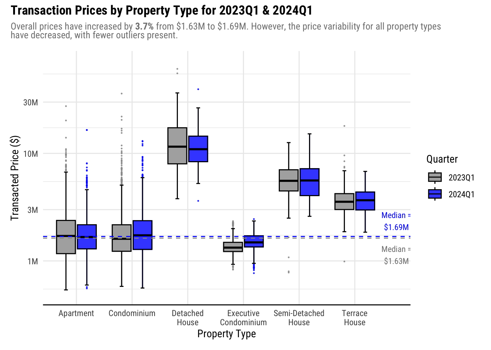

pacman::p_load(tidyverse, scales, patchwork, ggtext, DT)Take-home Exercise 2: DataVis Makeover
1 Overview
For this exercise, we will revisit Take-home Exercise 1, where we visualized the trends in the Private Real Estate Market of Q1 2024.
We will critique a visualization from our classmates in terms of clarity and aesthetics and improve the visualization using the best practices for visualizing data.
2 The Original Visualization
We will use Alicia Loh’s visualization as the purpose is very clear from a glance. However, there are some points that we can improve to improve its clarity and aesthetics.

This visualization has higher clarity than aesthetic. The image below shows where this visualization in in the Clarity vs Aesthetic quadrant.
2.1 Critique
Good Points
Purpose of the visualization is very easy at a glance. The purpose is to compare Q1 Transacted Prices between 2023 and 2024.
Plots are shown side by side, with same range in the y-axis, which makes it easy to compare the values between the 2 plots.
Use of median reference line for each year to see how the prices for each property time compare with the overall median.
Points of Improvement
Details are lost in the scale. Most of the values are less than $10M but it is hard to see the price distribution lower than this value.
- Due to this, even if there is a median reference line, it is hard to see compare Apartment, Condominium, or Executive condo prices with this trend.
No enlightening title to tell the story of the visualization.
Good Points
Y-axis labels are easy to read, instead of the raw numbers, e.g. 40M vs 40000000.
No ticks on categorical axis (Property Type)
Effort in using a theme for more professional look
Points of Improvement
Median labels cover the box plot.
X-axis labels are vertical, which make them hard to read
Axis texts are very close to the axis labels, making the plot look messy
Difficult to compare the price difference for each property type
- The reader needs context switching from the left to right graph to compare
2.2 Designing the Makeover
The sketch below shows illustrates the idea on how we can improve the visualization.

Note: The y-axis will label the axis in millions, like the original plot.
This design improves the visualization by:
Adding enlightening title and subtitle to the plot makes is easier for the reader to understand what is presented to them.
Using log10 scale on the y-axis to show a wider range of values.
Plotting the 2023 and 2024 boxplots side by side to more easily compare prices for each property type. Muted and bright colors will be used for 2023 and 2024, respectively, to emphasize the 2024 plots.
The previous point also provides more space to accommodate the x-axis labels. For longer titles, we will wrap them to the next line so they do not overlap with other labels.
Place more focus on styling the plots so the texts are using readable fonts and important details do not overlap each other.
3 Makeover Preparations
Before we proceed with the makeover, we need to prepare the R environment and the data.
3.1 Loading the R packages
We will use the following packages for the makeover:
| tidyverse | A collection of R packages used in data science, which includes ggplot2, tibble, readr, among others. |
| ggtext | Enhances text rendering for ggplot2. element_markdown() is most notable function used for markdown rendering so we can highlight important information in text. |
| patchwork | Allows composition of multiple graphs into a single plot. |
| scales | Extends functions to operate on ggplot2 scales. Useful for wrapping text and formatting numbers in axes. |
| DT | Wrapper for datatable.js, used for presenting tabular data |
3.2 Importing the datases
We will import only the 2023Q1 and 2024Q1 datasets as the visualization only involves those quarters.
When loading the datasets, we will also rename the columns to R-friendly format. For this purpose, we will reuse the rename_realis_column function from Take-home Exercise 1.
For each dataset, we will also align the corresponding quarter in the QUARTER column.
rename_realis_column <- function(orig_name) {
# Add underscores to spaces
gsub(" +", "_",
# Remove special characters
gsub("[^A-Z ]", "",
# Convert to upper case and remove trailing spaces
toupper(orig_name)) %>% trimws())
}realis_2023q1 <-
read_csv('data/ResidentialTransaction20240308160536.csv') %>%
rename_with(rename_realis_column)
datatable(head(realis_2023q1, n = 20))realis_2024q1 <-
read_csv('data/ResidentialTransaction20240414220633.csv') %>%
rename_with(rename_realis_column)
datatable(head(realis_2024q1, n = 20))3.3 Data Wrangling
Now that we have realis_2023q1 and realis_2024q1, we will combine them into a form that is usable for the make over.
3.3.1 Adding QUARTER columns
We will use mutate() to assign the corresponding quater to each dataset.
realis_2023q1$QUARTER <- "2023Q1"
realis_2024q1$QUARTER <- "2024Q1"3.3.2 Combining the dataframes
We will combine the dataframes to a single one using rbind(), so that we only need to work with a single dataframe for the makeover.
realis <- rbind(realis_2023q1, realis_2024q1)3.3.3 Selecting relevant columns
Lastly, we will select only the columns relevant to the visualization (QUARTER, PROPERTY_TYPE, TRANSACTED_PRICE) to make our dataframe more lightweight.
realis <- realis %>% select(c(QUARTER,
PROPERTY_TYPE,
TRANSACTED_PRICE))
datatable(head(realis, 20))We now have all the data we need in realis.
4 The Makeover
4.1 Implementing the design
In 2.2 Designing the Makeover, we came up with a design to improve the original visualization. We will use this as a starting point for the makeover.
We are getting the plot title and subtitle by extracting from the write-up in the original visualization.
We also need to calculate the medians for the reference lines:
median2023 = median(realis_2023q1$TRANSACTED_PRICE)
median2024 = median(realis_2024q1$TRANSACTED_PRICE)Show the code
ggplot(realis,
aes(
y = TRANSACTED_PRICE,
x = PROPERTY_TYPE,
fill = QUARTER,
color = QUARTER
)) +
# Renders colored outliers and box border
geom_boxplot(
aes(fill = NULL),
outlier.alpha = 0.8,
outlier.size = 0.2,
show.legend = FALSE
) +
# Renders without outliers to override the colored borders from previous box plot
# Staples are rendered so it is clearer where the outliers start
geom_boxplot(
alpha = 0.8,
staplewidth = 0.2,
outliers = FALSE,
color = "black"
) +
# 2023 Median reference line
geom_hline(yintercept = median2023,
color = "grey60",
linetype = "dashed") +
annotate(
"text",
label = paste0("Median =\n$", round(median2023 / 1e6, 2), "M"),
y = median2023 * 0.7,
x = 6.75,
color = "grey50",
size = 3,
family = "Roboto Condensed"
) +
# 2024 Median reference line
geom_hline(yintercept = median2024,
color = "blue",
linetype = "dashed") +
annotate(
"text",
label = paste0("Median =\n$", round(median2024 / 1e6, 2), "M"),
y = median2024 * 1.4,
x = 6.75,
color = "blue",
size = 3,
family = "Roboto Condensed"
) +
# Set colors
scale_fill_manual(values = c("grey60", "blue")) +
scale_color_manual(values = c("grey60", "blue")) +
# Format axes
scale_y_log10(limits = c(0.5e6, 70e6),
labels = number_format(scale = 1e-6, suffix = "M")) +
scale_x_discrete(labels = wrap_format(10), expand = expansion(add = c(0.6, 1))) +
labs(x = "Property Type",
y = "Transacted Price ($)",
fill = "Quarter") +
# Plot styles
theme_minimal() +
plot_annotation(title = "Transaction Prices by Property Type for 2023Q1 & 2024Q1",
subtitle = "Overall prices have increased by **3.7%** from $1.63M to $1.69M. However, the price variability for all property types<br/>have decreased, with fewer outliers present.") &
theme(
text = element_text(family = "Roboto Condensed"),
plot.title = element_text(face = "bold"),
plot.subtitle = element_markdown(color = "grey50", size = rel(0.9)),
axis.line.x = element_line()
)
Plotting the boxplots in pairs improved the clarity of the visualization as it makes it easier to compare prices within each property type. Using a bright color like blue for the 2024 plot and a muted color like gray for the 2023 plot places the focus towards the 2024 data during the comparison.
The theme and the styles applied greatly improved the readability, especially as the x-axis labels are now rendered horizontally. This also provided a bigger space for the plot itself.
Lastly, the title and subtitle provides a story for the visualization to help the reader understand what is presented to them.
While the makeover made the visualization more aesthetic, further improvements can be made:
Free up more space on the right by moving the legend to inside the plot. This will help expand the plot horizontally.
Adjust the x-axis texts. The labels are small and may be challenging for readers to read. As Property Type is a core part of the visualization, the legibility must be improved.
Reference lines are hard to see when overlapping with boxplots. It is hard to compare with the reference lines especially for
ApartmentandCondominiumas the color of the reference lines are the same as the fill. Consider changing the color of the reference lines.Add axis line and ticks to y-axis as it is a continuous value
If possible, add more values in y-axis labels as log scale is more difficult to judge than a linear scale. For example, we cannot see the values above $30M.
4.2 2nd Iteration
From the points of improvement of the initial makeover, we will do the following:
Move the legend to inside the plot
Adjust axis styles and labels
Tweak the presentation of the reference lines
Show the code
ggplot(realis,
aes(
y = TRANSACTED_PRICE,
x = PROPERTY_TYPE,
fill = QUARTER,
color = QUARTER
)) +
# Renders colored outliers and box border
geom_boxplot(
aes(fill = NULL),
outlier.alpha = 0.8,
outlier.size = 0.3,
show.legend = FALSE
) +
# Renders without outliers to override the colored borders from previous box plot
# Staples are rendered so it is clearer where the outliers start
geom_boxplot(
alpha = 0.8,
staplewidth = 0.2,
outliers = FALSE,
color = "black"
) +
# 2023 Median reference line
geom_hline(yintercept = median2023,
color = "darkgoldenrod4",
linetype = "dashed") +
annotate(
"richtext",
label = paste0("2023Q1 Median<br/>**$", round(median2023 / 1e6, 2), "M**"),
y = median2023 * 0.65,
x = 6.9,
color = "darkgoldenrod4",
size = 3,
family = "Roboto Condensed"
) +
# 2024 Median reference line
geom_hline(yintercept = median2024,
color = "brown",
linetype = "dashed") +
annotate(
"richtext",
label = paste0("2024Q1 Median<br/>**$", round(median2024 / 1e6, 2), "M**"),
y = median2024 * 1.55,
x = 6.9,
color = "brown",
size = 3,
family = "Roboto Condensed"
) +
# Set colors
scale_fill_manual(values = c("grey60", "blue")) +
scale_color_manual(values = c("grey60", "blue")) +
# Format axes
scale_y_log10(limits = c(0.5e6, 100e6),
labels = number_format(scale = 1e-6, suffix = "M"),
n.breaks = 9) +
# Add more space to the right side for the reference line annotations and legend
scale_x_discrete(labels = wrap_format(10), expand = expansion(add = c(0.6, 1.4))) +
labs(x = "Property Type",
y = "Transacted Price ($)",
fill = "Quarter") +
# Plot styles
theme_minimal() +
plot_annotation(title = "Transaction Prices by Property Type for 2023Q1 & 2024Q1",
subtitle = "Overall prices have increased by **3.7%** from $1.63M to $1.69M. However, the price variability for all property types<br/>have decreased, with fewer outliers present.") &
theme(
text = element_text(family = "Roboto Condensed"),
plot.title = element_text(face = "bold"),
plot.subtitle = element_markdown(color = "grey50", size = rel(0.9)),
axis.line = element_line(),
axis.title = element_text(face = "bold", size=rel(1.1)),
axis.text = element_text(size = rel(0.9)),
axis.ticks.y = element_line(),
# Render legend inside the plot
legend.position = "inside",
legend.position.inside = c(1, 0.85),
legend.justification = "right",
legend.location = "plot",
legend.box.background = element_rect()
)
In this iteration, we maximized the available space by expanding the right side of the x-axis further, which now holds the legend and annotations for the reference lines. Doing this also ensures that no important information get covered by the annotations.
Next, the colors of the reference lines were changed to a different color than the fills, with labels added to the end of the line so readers won’t need to refer to the legend to identify what the line is for.
Lastly, we did tweaks on the axis to improve legibility by increasing the font size. The y-axis now has smaller breaks to help readers gauge the log scale better. Aesthetically, this is worse as the axis labels do not look equidistant. However, this helps a lot in clarity.
In our subtitle, we have this excerpt from the original write-up:
Overall prices have increased by 3.7% from $1.63M to $1.69M. However, the price variability for all property types have decreased, with fewer outliers present.
Now that we expanded the y-axis, we can see that this is not necessarily true. The box and whiskers are longer in 2024 than 2023 for Condominium and Semi-Detached House. Hence, we must update this to prevent confusion.
Instead, we can emphasize the observation that Landed properties all sold above the market median.
Lastly, the text size of our plot title and subtitles must be increased as well for legibility and make adjustments accordingly after we increased the font sizes in other parts of the plot.
4.3 Final Iteration
To emphasize that Landed properties sell above the the median price, we will do the following:
Rearrange x-axis to put landed property types to 1 side of the plot
Add annotation that landed property types sold above market median.
Adjust text for legibility
Show the code
final_viz <- ggplot(realis,
aes(
y = TRANSACTED_PRICE,
x = factor(
PROPERTY_TYPE,
levels = c(
"Detached House",
"Semi-Detached House",
"Terrace House",
"Condominium",
"Apartment",
"Executive Condominium"
)
),
fill = QUARTER,
color = QUARTER
)) +
# Annotate that all landed properties sold above market median
annotate(
"rect",
xmin = 0.5,
xmax = 3.5,
ymin = 0.5e6,
ymax = 100e6,
alpha = 0.1,
fill = "blue"
) +
annotate(
"richtext",
label = "Landed properties sold for<br/>above market median<br/>prices in 2024Q1.",
y = 55e6,
x = 2.6,
size = 3,
family = "Roboto Condensed"
) +
# Renders colored outliers and box border
geom_boxplot(
aes(fill = NULL),
outlier.alpha = 0.8,
outlier.size = 0.3,
show.legend = FALSE
) +
# Renders without outliers to override the colored borders from previous box plot
# Staples are rendered so it is clearer where the outliers start
geom_boxplot(
alpha = 0.8,
staplewidth = 0.2,
outliers = FALSE,
color = "black"
) +
# 2023 Median reference line
geom_hline(
yintercept = median2023,
color = "darkgoldenrod4",
linetype = "dashed"
) +
annotate(
"richtext",
label = paste0("2023Q1 Median<br/>**$", round(median2023 / 1e6, 2), "M**"),
y = median2023 * 0.65,
x = 6.9,
color = "darkgoldenrod4",
size = 3,
family = "Roboto Condensed"
) +
# 2024 Median reference line
geom_hline(yintercept = median2024,
color = "brown",
linetype = "dashed") +
annotate(
"richtext",
label = paste0("2024Q1 Median<br/>**$", round(median2024 / 1e6, 2), "M**"),
y = median2024 * 1.55,
x = 6.9,
color = "brown",
size = 3,
family = "Roboto Condensed"
) +
# Set colors
scale_fill_manual(values = c("grey60", "blue")) +
scale_color_manual(values = c("grey60", "blue")) +
# Format axes
scale_y_log10(
limits = c(0.5e6, 100e6),
labels = number_format(scale = 1e-6, suffix = "M"),
n.breaks = 9
) +
# Add more space to the right side for the reference line annotations and legend
scale_x_discrete(labels = wrap_format(10), expand = expansion(add = c(0.6, 1.4))) +
labs(x = "Property Type",
y = "Transacted Price ($)",
fill = "Quarter") +
# Plot styles
theme_minimal() +
plot_annotation(title = "Transaction Prices by Property Type for 2023Q1 & 2024Q1",
subtitle = "Overall prices have increased by <span style='color:darkgreen;'>**3.7%**</span> from **$1.63M** to **1.69M**. **Detached Houses** remain the most<br />expensive property type, while **Executive Condominiums** are still the cheapest.") &
theme(
text = element_text(family = "Roboto Condensed"),
plot.title = element_text(face = "bold", size = rel(1.4)),
plot.subtitle = element_markdown(color = "grey50"),
axis.line = element_line(),
axis.title = element_text(face = "bold", size = rel(1.1)),
axis.text = element_text(size = rel(0.9)),
axis.ticks.y = element_line(),
# Render legend inside the plot
legend.position = "inside",
legend.position.inside = c(1, 0.85),
legend.justification = "right",
legend.location = "plot",
legend.box.background = element_rect(),
legend.title = element_text(face = "bold", size = rel(1.1)),
legend.text = element_text(size = rel(0.9))
)
final_vizWe adjusted the texts for the core visualization elements so that they are more legible.
The landed property types were clustered in one side of the map, with annotation added so the observation that they sold above market median is can easily be seen and interpreted. Another added benefit of this is that property types whose prices are closer to the median are closer to the reference line labels, which makes it easier to do a closer comparison and referencing.
We also changed the focus of the subtitle from price variability, which was found to be misleading once we could see the price ranges more clearly.
This ends the makeover as we have already greatly improved the clarity and aesthetics.
5 Summary
5.1 Makeover results

Insights
The makeover significantly enhanced the visualization’s effectiveness in comparing prices by property type between 2023Q1 and 2024Q1. With adjacent box plots, price comparisons from one year to the other became much easier.
Additionally, scaling the y-axis from linear to log improved clarity, especially as properties sold for a wide range of prices. We can observe that Semi-Detached Houses and Condominiums show increased variability in 2024Q1, as indicated by longer box and whiskers. This is contrary to the insights from the original visualization, which indicated that prices are less variable for all property types.
Furthermore, annotations highlighted notable observations, such as all landed properties sold in 2024Q1 for higher than the market median. Additionally, the switch to a white background enhanced the overall aesthetic of the visualization. This allowed for more flexible styling compared to the original’s light blue economist theme, providing a more visually appealing and informative representation of the data.
5.2 Reflections
Doing this exercise helped me become more critical when viewing data visualizations. With the learning from this course, I was able to know what to look out for when looking at data presented (e.g. what’s missing, what it really means, etc.)
I also realized that although I was very detailed in my work for Take-home Exercise 1, I focused more on the aesthetics of the visualization more than the clarity as I enjoyed playing around with ggplot themes.
This exercise reminded me to balance the clarity with aesthetics and that data visualizations are for enlightenment, not entertaining.
References
Kam, Tin Seong. (2024). Lesson 2: Designing Graphs to Enlighten. ISSS608 AY2023-24 April Term. https://isss608-ay2023-24apr.netlify.app/lesson/lesson02/lesson02-designing%20graphs%20to%20enlighten
Loh, Alicia. (2024, April 24). Take-home Exercise 1 - Creating Data Visualisation Beyond Default. ISSS608. https://lnealicia-isss608.netlify.app/take-home_ex/take-home_ex01/take-home_ex01
Paas, Kristine Joy. (2024, April 26). Take-home Exercise 1: Singapore Private Residential Property Market for 2024 Q1. ISSS608. https://isss608-kjcpaas.netlify.app/take-home_exs/ex1/take-home_ex1
PropertyGiant Singapore. (2021, August 9). Everything you need to know about strata landed houses and the available strata landed projects in Singapore. PropertyGiant.https://www.propertygiant.com/blog/everything-you-need-to-know-about-strata-landed-houses-and-the-available-strata-landed-projects-in-singapore